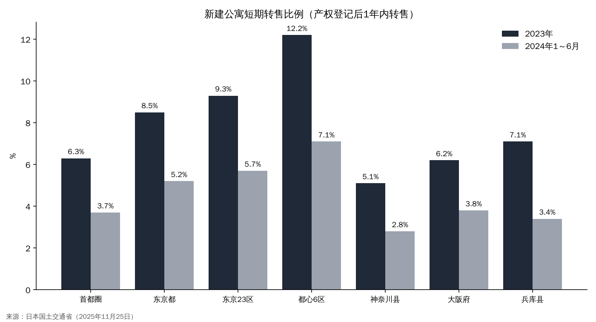
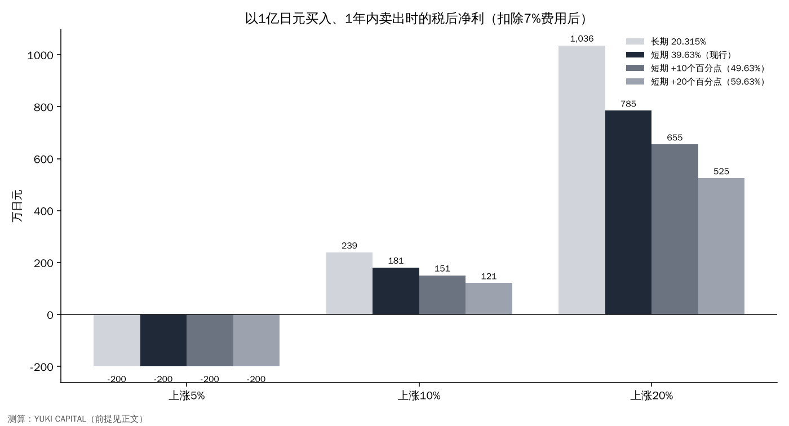

如果对公寓短期转售征收更重的税，房价和"收购翻新再售"企业会怎样？——用日本国土交通省的登记数据和税率测算
买下东京市中心的新建公寓、不到一年就卖出的交易，以东京为中心在增加。据日本国土交通省调查，2023年东京都心6区在产权初次登记后1年内被转售的住户达12.2%[1]。
日本政府在2027年度税制改革中提出了抑制这类投机交易的措施，执政党的税制改革大纲也写明将对新建公寓的短期买卖采取税制措施[2][3]。
本文的问题是：如果对短期转售征收更重的税，对转售的利润、房价以及收购翻新再售的企业会产生多大影响？
- 即使按现行制度，个人在5年内卖出所得的转让收益也要缴纳39.63%。以1亿日元买入的房子即使涨价10%卖出，扣除7%的费用后，税后净利也只有约181万日元[4]。
- 如果税率提高10～20个百分点，净利会降到151万～121万日元。如果涨幅低于费用的7%，无论税率多少都会亏损。
- 收购翻新再售企业的利润作为经营所得纳税，因此提高个人转让所得的税率不会直接影响它们。对它们有影响的是将于2027年3月底到期的不动产取得税和登记许可税的减免措施如何处理[5][6]。

问题与背景
本文所说的"短期买卖"，是指新建公寓在产权初次登记（新建筑的所有人首次登记）后1年内转移给他人。日本国土交通省利用从法务省获得的登记信息和民间价格数据，调查了三大都市圈和4个地方城市约55万户新建公寓[1]。
"收购翻新再售"是指不动产交易业者收购二手住宅，翻新后卖给个人的业务。如果进行一定的翻新，业者收购时的不动产取得税和买方个人的登记许可税可以享受减免[5][6]。
本文所说的"转让所得"，是指出售土地或建筑物获得的收益中，扣除买入价格和出售费用后的部分。个人出售自住房以外的房屋时，这部分所得与其他所得分开计税。本文中的"税率"就是这种分离计税的税率。
这个问题现在之所以重要，是因为税制的讨论开始具体化。日本国土交通省在2027年度税制改革要求中加入了"应对新建公寓价格高涨的必要措施"，表示将研究抑制不基于实际需求的投机交易的方法[2]。共同社报道称，预计将加重对短期买卖的税负[7]。
不过，现行制度已经区分了短期和长期。所以真正要问的不是"要不要征税"，而是"比现在重多少个百分点，会让哪些交易停下来"。本文用数字来确认这个差别。
数据与方法
本文使用的数据是日本国土交通省调查中按地区、年份、规模划分的短期买卖比例[1]，以及日本国税厅公布的个人转让所得税率[4]。按现行规定，以出售年度1月1日为准，持有期间在5年以下的为短期转让所得，所得税、复兴特别所得税和住民税合计39.63%；超过5年的为长期，税率为20.315%。
需要注意持有期间的计算方法。由于以"出售年度的1月1日"为准，2026年3月买入的房子要到2032年以后出售才适用长期税率。实际上需要持有约5年10个月，适用短期税率的期间比很多人想象的更长。
转售的利润以1亿日元的房子在1年内卖出的情形测算。公式为"税后净利＝（卖价－买价－费用）×（1－税率）"。费用包括中介费、登记费和贷款手续费等，合计按买价的7%计算。涨幅设为5%、10%、20%三种情形，税率除现行的39.63%外，还假设了提高10个百分点的49.63%和提高20个百分点的59.63%。
为了比较，也列出了持有超过5年时的长期税率20.315%。由于政府尚未给出具体数字，提高幅度是假设值。
结果

短期买卖的比例在2023年较高，2024年1～6月有所下降。需要注意2024年的数据只有半年，下半年可能有所回升。东京23区从2023年的9.3%降至5.7%，都心6区从12.2%降至7.1%[1]。2018～2022年都心6区的最高值为4.6%，可见2023年的跳升幅度之大。
规模也有差别。在东京23区40平方米以上的住户中，2024年上半年的短期买卖比例，每栋有100件以上登记的大型公寓为9.9%，其他为3.3%[1]。转售集中在大型项目。
居住在海外的人购买的比例，都心6区2024年为7.5%，2025年1～6月为3.2%[1]。从整体数字看，海外买家并不是主角。
按地区比较，相对于2018～2022年的最高值，2023年比例增幅最大的是都心6区（4.6%→12.2%）和兵库县（4.1%→7.1%）[1]。越靠近市中心、规模越大转售越多，这与"转售集中在涨幅大的地方"的看法一致。
敏感性分析

| 涨幅 | 长期 20.315% | 短期 39.63%（现行） | 短期 49.63% | 短期 59.63% |
|---|---|---|---|---|
| 5% | －200万日元 | －200万日元 | －200万日元 | －200万日元 |
| 10% | 239万日元 | 181万日元 | 151万日元 | 121万日元 |
| 20% | 1,036万日元 | 785万日元 | 655万日元 | 525万日元 |
涨幅为10%时，按现行税率净利约181万日元，仅相当于1亿日元本金的1.8%左右。税率提高20个百分点后降至121万日元。涨幅达到20%时，税率差别在金额上影响很大（从785万日元降至525万日元）。
另一方面，如果涨幅达不到7%的费用，无论税率多少都会亏损。换句话说，支撑短期转售的并不是低税率，而是一年上涨超过10%的价格走势本身。
还值得注意的是短期与长期的差距。涨幅为20%时，仅现行短期39.63%与长期20.315%的差别，净利就相差251万日元。税率提高20个百分点后，差距扩大到511万日元。持有到长期税率的动机会增强，但这也意味着待售房源更难出现。
改变前提，结果也会变化。费用降到5%，净利会增加；如果把贷款利息也算进去设为10%，涨幅10%时无论税率多少几乎都没有净利。这里的数字请作为一个明示前提的测算来阅读。

讨论
第一，加税会让大幅上涨时期的转售减少。在涨幅小的时期，即使按现行税率，利润也已经很薄。日本国土交通省的数据显示2024年比例下降，可能是利率上升和涨幅放缓先起了作用。
第二，提高个人转让所得税率不会直接影响收购翻新再售企业。业者把收购的住宅作为商品出售，利润作为经营所得缴纳法人税等。对它们有影响的是不动产取得税和登记许可税的减免措施在2027年3月底到期后是否延长[5][6]。
也有相反的看法：即使对短期转售征税，如果新建住宅供应不增加，房价也不会下降。还有不靠税收、而靠合同来抑制的方法，例如东京千代田区要求日本不动产协会加入交房后5年内禁止转售的特别条款[8]。
第三，法人的处理可能成为漏洞。法人持有的不动产出售所得，无论持有期间长短，都作为法人所得纳税。如果只提高个人的短期税率，转售的主体可能从个人转向法人。大纲是否把法人纳入对象，将决定措施的效果。
第四，对二手市场的影响。如果新建公寓的短期转售减少，原本作为新房"转售出口"流出的房源将不再出现在二手市场。二手供应变少，二手价格可能更难下跌。对收购翻新再售企业来说，可收购的房源数量和价格都会受到影响。
数据也有局限。日本国土交通省的数字基于登记，因此法人买入房屋后出售法人股份这种形式的转售没有被计入。检验的标准是12月执政党税制改革大纲如何写明三点：对象（只限新房还是包括二手房）、期间（1年还是5年）、是否包括法人。
结论
加重对短期转售的征税，会把大幅上涨时期的转售净利削减两到三成。但在涨幅小的时期，按现行税率利润已经很薄，推动房价的力量与其说是税收，不如说更可能是利率和供应。对收购翻新再售企业有影响的不是税率，而是将于2027年3月底到期的减免措施的去向。
我的看法
我在日本，我赞成千代田区禁止转售的做法。我认为东京市中心的住宅已经完全变成了金钱游戏。用借来的钱买下因名气而升值的土地或建筑，除了等待转售收益之外，什么也产生不了。
我认为，利率上升后，用借款买房的人的抛售会先出现在二手公寓和塔楼公寓，之后才会轮到大型写字楼和商业楼。所以现在我不会从买方的角度看不动产股，我认为它们还会继续下跌。另一方面，我觉得日本REIT可能被卖过头了，所以一直在关注。
来源
- 日本国土交通省《利用不动产登记信息的新建公寓交易调查结果》2025-11-25 https://www.mlit.go.jp/report/press/content/001970012.pdf
- 日本国土交通省《令和9年度税制改革要求事项：应对新建公寓价格高涨的必要措施》2026-08 https://www.mof.go.jp/tax_policy/tax_reform/outline/fy2027/request/mlit/09y_mlit_k_16.pdf
- 自由民主党・日本维新会《令和8年度税制改革大纲》2025-12-19 https://storage2.jimin.jp/pdf/news/policy/212129_1.pdf
- 日本国税厅《No.1440 转让所得（转让土地或建筑物时）》 https://www.nta.go.jp/taxes/shiraberu/taxanswer/joto/1440.htm
- 日本国土交通省《租税特别措施政策评价（收购翻新再售住宅的登记许可税特例）》 https://www.mlit.go.jp/page/content/002012055.pdf
- 群马县《收购翻新再售住宅等取得时的不动产取得税特例措施》2026-04-01 https://www.pref.gunma.jp/site/tax/5306.html
- 共同社（OANDA证券转载）《因公寓价格高涨提出税制要求》2026-08-25 https://www.oanda.jp/lab-education/market_news/kn_2026082501001454/
- Moneyizm《听取千代田区等意见，进入年底税制改革讨论》2026-10 https://www.all-senmonka.jp/moneyizm/?p=316476
照片：Unsplash。图表由YUKI CAPITAL制作
每天的数字和判断，我都记录在X上。